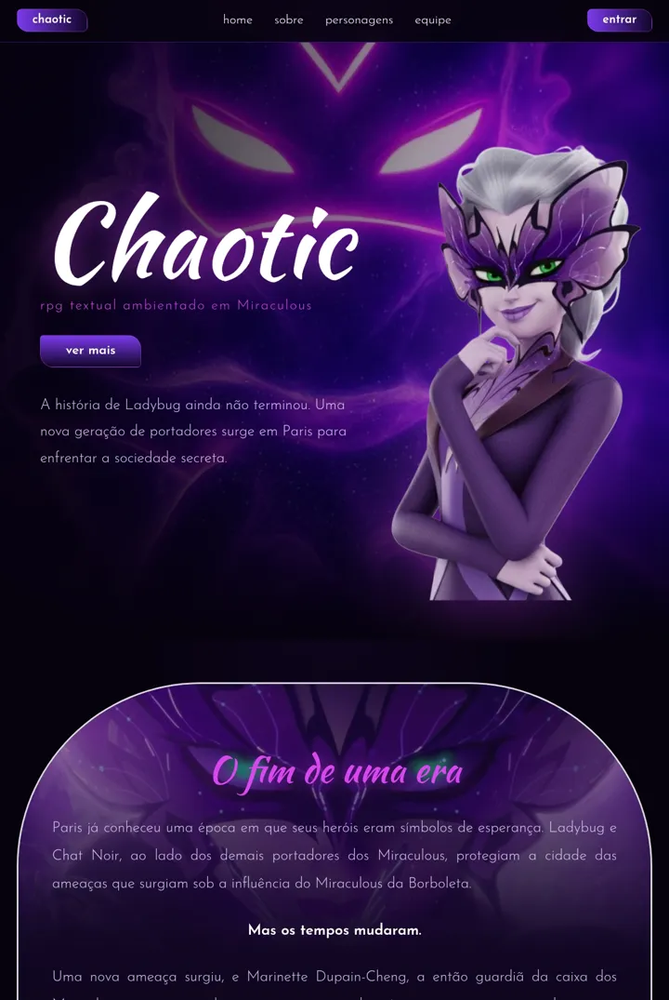
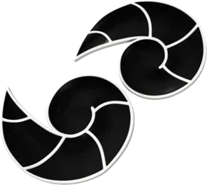
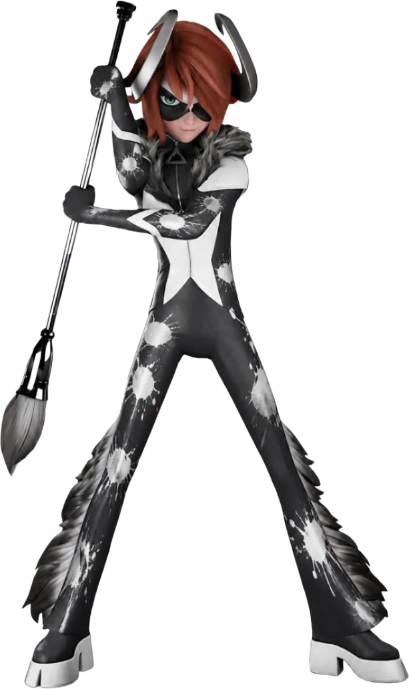
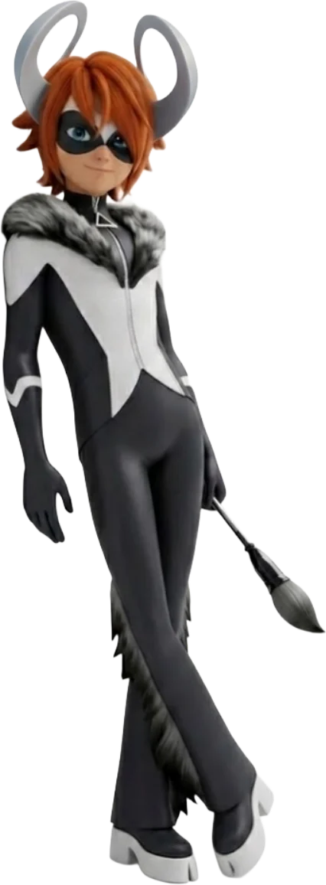
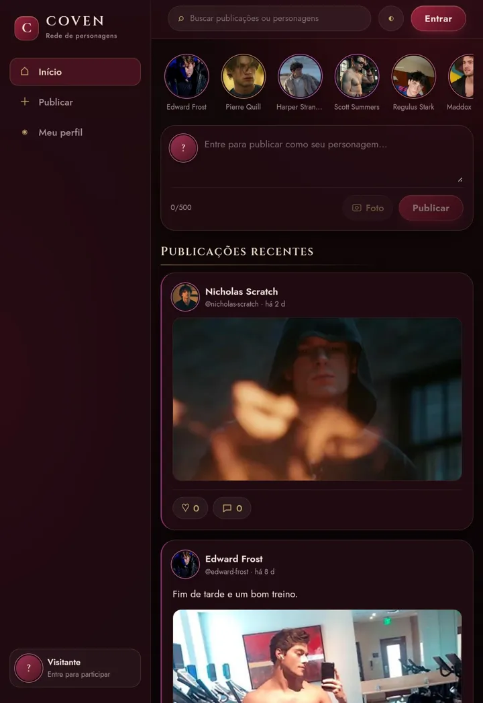
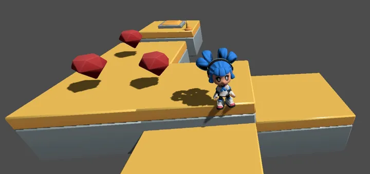
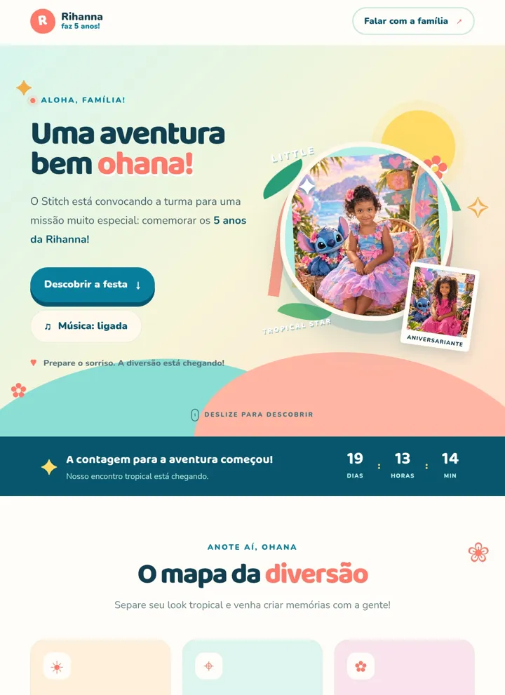
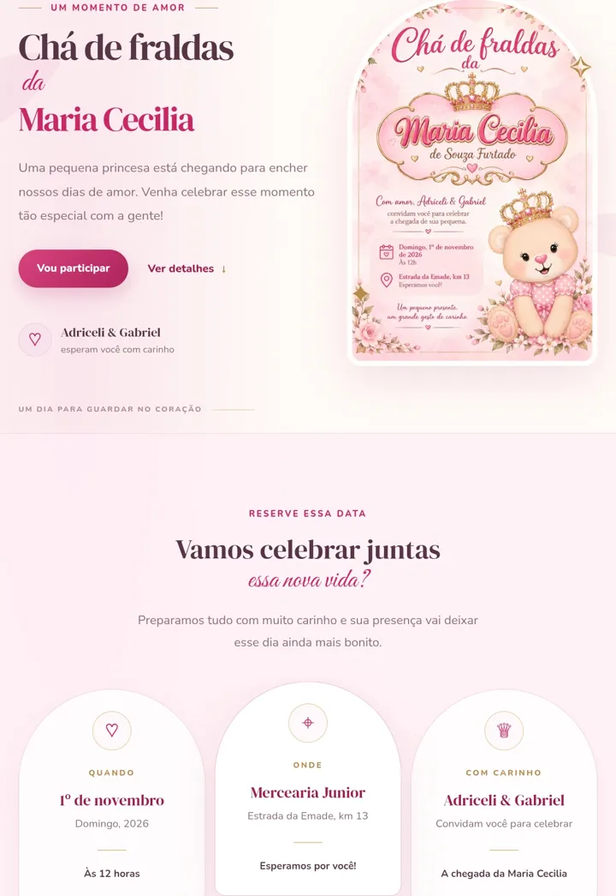
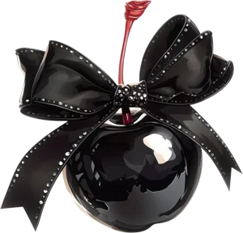

Chaotic
Site de um RPG textual ambientado em Miraculous. Conta a história da nova geração de portadores e apresenta personagens e equipe.
HTML · CSS · JavaScript

Victor Gabriel, 23 anos. Desenvolvedor em formação que pinta sites, sistemas e jogos com código.
Toque na tela para jogar tinta

Cada projeto é uma tela em branco.
Sou Victor Gabriel, mas todo mundo me conhece como Mattis. Estou cursando Análise e Desenvolvimento de Sistemas e gosto de criar coisas que as pessoas usam de verdade: sistemas de venda, comunidades e jogos.
Sou apaixonado pelo universo de Miraculous. Este portfólio usa um dos meus personagens favoritos, com seus chifres, seu pincel e suas manchas de tinta.

Site de um RPG textual ambientado em Miraculous. Conta a história da nova geração de portadores e apresenta personagens e equipe.
HTML · CSS · JavaScript
Rede social para RPG textual. Cada pessoa publica como o seu personagem, com stories, busca e perfis.
HTML · CSS · JavaScript
Protótipo de jogo de plataforma feito na Godot. A personagem corre, pula entre blocos e coleta diamantes, com controles de toque.
Godot · protótipoSistema de vendas em desenvolvimento, com balcão, cadastro de produtos, controle de estoque, fiados, relatórios e impressão de comprovantes.
Em desenvolvimento
Site de convite de aniversário com tema do Stitch, contagem regressiva, música e o mapa da festa.
Sites de convites
Convite digital com botão de confirmação de presença, data, local e um visual delicado.
Sites de convites
Tem uma ideia de site, sistema ou jogo? Me conta que eu transformo em projeto.